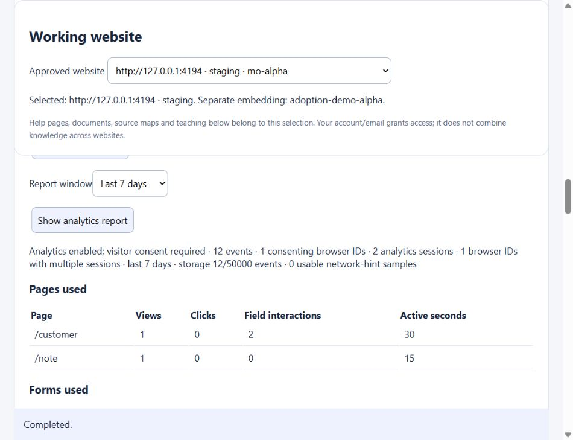
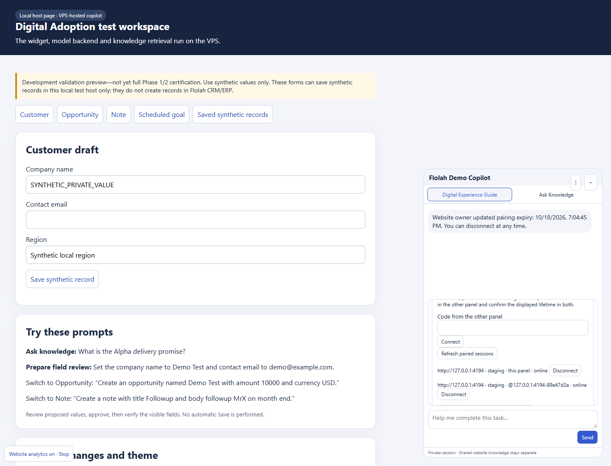

Full Phase 1/2 certification remains partial.
{'passed': 37, 'partial': 5, 'failed': 0, 'pending': 3}
221/221 application tests locally and in the deployed D image. New scope: seven passed, one partial; historical cases preserve their original evidence release.
Laptop loopback fixture and public flolah.cloud only. New actual analytics/pairing tests used the local fixture and actual VPS owner console; historical public/workflow evidence retains its original release. No public form submissions; public workflow permission Off. Public preview expiry unchanged: 2026-10-18 15:17 Singapore.
Local test registration: enabled, 30-day opt-in, network hints Off. Public registrations: Off. No field/chat/document contents or raw IPs in analytics.
CSV · JSON · SHA-256 evidence manifest


| Feature / case | Status | Observed evidence | Recommendation / evidence |
|---|---|---|---|
| F01 Clean owner self-service onboarding proof | partial | Demo seeding defaults Off. The empty-registration integration exercises registration, DNS/email verification, approval and observation without handbook/maps/recipes; DNS/email transports are synthetic. The existing local registration has historical operator provisioning and seeded content. | Repeat fresh empty onboarding through real owner DNS/email self-service before closing this case. ../feedback-20261018/workflow-owner-workflow-restored-off.png |
| F02 Action button acknowledgement and bottom status | passed | Immediate busy/disabled state; duplicate activation executes once; bottom completion clears after three seconds, including when the originating button is removed. | Keep the generic feedback wrapper on new asynchronous actions. ../feedback-20261018/controls-action-working.png |
| F03 HTML control coverage and cross-framework state compatibility | passed | Native radio/select/multiple-select/checkbox/datalist plus real React 18 and Angular 20 application state and independently persisted synthetic record readback pass. Stale control review is rejected. | Support is bounded to the observed accessible controls; certify vendor widgets separately. ../feedback-20261018/controls-native-complex.png |
| F04 Natural-language mixed dropdown and checkbox intent | passed | Real model chat understands Express plus Include gift wrap, presents Selected rather than internal true, supports Reject, and does not submit. | Retain mixed-intent and negation regression coverage. ../feedback-20261018/live-F04_MIXED_SEMANTIC_INTENT_AND_F09_REJECT-local.png |
| F05 Expand local fixture with tables and complex dynamic components | passed | Added and tested async picklist loading/no-match/error/duplicate-label rejection and recovery, dependent contact, table row selection/editing, sorting/filtering/pagination, dynamic rows, modal scope, numeric constraints and persisted table/multiselect values. | This certifies the supported accessible fixture patterns. Vendor-specific virtualized grids or closed components still require their own adapter acceptance. ../feedback-20261018/controls-native-complex.png |
| F06 Pairing gives stale generic errors and confusing self-inclusive member count | passed | Pairing is bilateral; counterpart count excludes this panel. Duplicate confirmation/revocation is idempotent and stale errors clear on successful action. | Use the counterpart list and current presence instead of interpreting total membership as live peers. ../feedback-20261018/live-F06_F14_NAMED_BILATERAL_GROUP-local.png |
| F07 Disable pending action buttons and show progress state | passed | Shared asynchronous-action feedback suppresses repeated activation and exposes working/completed status. Background presence does not resurrect an old notice. | Apply this shared path to newly introduced action controls. ../feedback-20261018/controls-action-working.png |
| F08 Browser refresh loses visible pairing and continuation | passed | Both actual browser tabs reload and rejoin their saved group using fresh endpoints. Ended private files and approvals are not restored. | Reauthorize only after consent expiry/revocation or loss of browser proof. ../feedback-20261018/live-F08_F18_REFRESH_SAME_GROUP_NO_PRIVATE_RESTORE-local.png |
| F09 Inline Cancel or Reject in field review | passed | Field review includes Reject; Save review includes Cancel save. Rejecting private-file review retains the ready file. Both cancellation journeys independently assert zero host submissions. | Keep fill approval and host Save approval separate. ../feedback-20261018/reviews-field-review-approve-and-reject.png |
| F10 Summary-only no-write request incorrectly produces field-fill review | passed | Private summary-only prompt returns an answer with no field review or fill; synthetic host fields remain empty. | Continue enforcing read-only intent before generating write proposals. ../feedback-20261018/live-F10_PRIVATE_SUMMARY_ONLY_NO_REVIEW-local.png |
| F11 Unified chat composer with paired-copilot at-mentions | passed | Handoffs use @recipient in the normal bottom composer and Send. Missing sharing consent is rejected; setup is limited to files, pairing/linking and consent. | Use the shared composer for further delivery modes. ../feedback-20261018/live-F11_RELAY_CONSENT_REQUIRED-local.png |
| F12 Ended live task and stale online UI produce unrecoverable generic handoff refusal | passed | Reconnect, expiry/revocation and stale endpoint coverage pass; live offline workflow run 4062 reports COPILOT_RECIPIENT_OFFLINE without future delivery. Saved group remains. | An uncertain host effect is never automatically replayed; inspect before retrying. ../feedback-20261018/workflow-run4062-offline.png |
| F13 Missing launcher on SDK bootstrap failure and absent loading/retry feedback | passed | Injected SDK download failure leaves host usable and visible Retry recovers without host reload on local/public. Explicit retry bypasses the browser cached failed module import. | The eight-second attempt limit is a bound; injected recovery timings are not normal startup benchmarks. ../feedback-20261018/bootstrap-download-failed-local.png |
| F14 Confirmer-controlled pairing lifetime separate from visitor-session inactivity | passed | The confirmer chooses group name, hours/until-revoked and optional inactivity. Presence polling does not renew inactivity; persistence tests cover restart and expiry. | Until revoked persists consent, not private task data or perpetual live authorization. ../feedback-20261018/live-F06_F14_NAMED_BILATERAL_GROUP-local.png |
| F15 Sender conversation trace for copilot handoffs | passed | Sender chat shows the instruction, selected context, recipient and delivery result/time; receiver gets the authorized private context. | Private sender content clears when the task ends. ../feedback-20261018/live-F11_F15_UNIFIED_HANDOFF_AND_SENDER_TRACE-local.png |
| F16 Workflow setup must explain owner capability and stale paired-session prerequisites | passed | Workflow user authorization is distinct from website ownership. Independently linked single local target runs without peer pairing; another explicitly authorized same-owner target can join its saved group. | Owner must enable workflow capability; visitor must explicitly link; Action Policies still apply. Public temporary capability was restored Off. ../feedback-20261018/workflow-saved-workflow-targets.png |
| F17 Readable inspection results and downstream workflow use | passed | Run 4060 shows per-website fields/forms/navigation without entered values. Run 4063 inspect -> summarize passes the task-bound result handle: current form has zero visible fields, yet real LLM correctly reports all three previously observed required fields. | Pass task-bound handles between steps before task cleanup; never store transaction text in durable generic workflow audit. ../feedback-20261018/workflow-run4060-audit-results.png |
| F18 Persistent reusable workflow copilot groups | passed | Runs 4059 and 4060 use the same saved group and website selection across both tab refreshes without new group/link IDs. Offline run 4062 fails clearly while retaining the group. No peer pairing dependency. | Saved groups are reusable target authorizations; commands resolve eligible live endpoints on each run. ../feedback-20261018/workflow-saved-workflow-targets.png |
| F19 Workflow instruction and copilot response in visitor chat history | passed | Both visitor panels show full incoming workflow instruction/progress and readable inspection result. Task end removes private instruction/data and keeps a structural completion trace. | Review audit plus browser traces together; screenshot capture holds are excluded from latency measurements. ../feedback-20261018/workflow-incoming-local.png |
| TX01 Transaction extraction and citations | passed | Actual deployed parser/model: TXT, PDF, DOCX, PNG and JPEG, three correct fields and citations each. PDF/PNG Chrome uploads and summaries passed. | Retain this synthetic corpus as a release gate; additional languages/handwriting are unsupported. ../feedback-20261018/private-browser-pdf.json |
| TX02 Reviewed fill and independent Save proof | passed | PDF and PNG: fresh Customer field review, explicit fill, separate synthetic Save; exact returned record UUID and three values independently read back. | Keep business-save readback host-specific. Observed fields alone never prove persistence. ../feedback-20261018/private-browser-pdf.json |
| TX03 Requested form, missing/conflicting fields | passed | Both browser runs navigated from Customer to Note then freshly inspected/filled. Unit cases reject invented values, missing/conflicting/repeated labels. | Expand custom-control coverage per host before advertising support. ../feedback-20261018/private-browser-pdf.json |
| TX04 Private upload and document boundary | passed | Capability separation, extension/MIME/signature/binary/size limits and instruction rejection pass. No private upload publishes shared sources. | Keep supported formats explicit; add separate acceptance before adding languages/file types. ../feedback-20261018/private-browser-pdf.json |
| PAIR01 Anonymous local/public bilateral pairing | passed | Anonymous live Chrome panels on loopback Customer and public flolah.cloud MCP Universe paired with bilateral confirmation; each panel displayed the other exact origin. | Use fresh pairing codes and current preview authorization for future releases; pairing remains user consent rather than device attestation. ../feedback-20261018/private-browser-pdf.json |
| PAIR02 Pairing and identity isolation | passed | Wrong owner, expiry/reuse, foreign instance/session, conflicting user links and unrelated group tests pass. | Pairing is explicit user consent, not proof of a single physical device. ../feedback-20261018/private-browser-pdf.json |
| RELAY01 Private handoff to public destination form | passed | Sharing without consent rejected; with consent, private integration passages reached the public panel. Real model proposed Inventory API and stdio from the file. Controls remained blank until approval, then both values were independently observed; no public submission. | Keep destination inspection and review; never interpret filled controls as a saved business record. Future website fixtures must supply their own observed controls. ../feedback-20261018/private-browser-pdf.json |
| WF01 Signed-in workflow discovery and editor | passed | Real signed-in editor saved direct targets, website selection and stable group; real runs 4058/4059/4060 completed without a peer pair. | Keep owner policy and entitled workflow-user binding separate. ../feedback-20261018/workflow-saved-workflow-targets.png |
| WF02 Website selection and captured fanout | passed | Selected websites/all-active exact snapshot; missing selected website, unrelated groups/new arrivals, busy tabs and duplicate operations tested. | Retain runtime snapshot preflight; never queue for future visitors. ../feedback-20261018/private-browser-pdf.json |
| WF03 Policy modes, approvals and effects | partial | Actual runner passes autonomous/prohibited/exact approval fanout, maxUses override exhaustion and single-use grants. Per-effect revalidation/binding tests pass. Updated real-runner integration also asserts offline error propagation; live browser workflows in this session are read-only. | Complete signed-in browser workflow fill and owner-bound native Save with independent host readback. ../feedback-20261018/workflow-runner.log |
| WF04 Disconnect, fail-fast and no replay | passed | Real live target disconnect causes run 4062 to fail with COPILOT_RECIPIENT_OFFLINE. Group remains; runner regression checks safe error propagation and duplicate/lost-command paths. | No offline queue or replacement visitor. A new run is required after reconnect. ../feedback-20261018/workflow-run4062-offline.png |
| PRIV01 Task deletion and checkpoint privacy | passed | End/expiry/restart/revocation tests pass; live canary absent SQLite rows and consistent checkpoint; raw objects ciphertext only; ending task leaves zero bytes/backlog. Both panel logs/reviews/files clear. Public recipient shows shared-file status without unauthorized Remove control; End task clears both cross-origin panels. | Verify final zero private metrics after each release and preserve encrypted-object/key separation. ../feedback-20261018/private-browser-pdf.json |
| PRIV02 Workflow downstream privacy | partial | Task-only result handles and real runner persisted context/step canary checks pass; ordinary private chat never enters durable history. Run 4063 now proves actual chained LLM consumption of authorized private handles before cleanup. | Broaden downstream node/template/tool/Kanban/telemetry adversarial matrix; document actual upstream provider retention. ../feedback-20261018/context-run4063-completed.png |
| CAP01 25 websites / 25 users capacity | partial | Fresh H-image isolated 25-website/25-user capacity result is linked. It includes 50 authenticated sockets, two real Python parsers and 250 HTTP samples, without production mounts. | Short synthetic pilot excludes full concurrent model/OCR/provider latency, soak and multi-coordinator HA. Measure these before scaling beyond the pilot.Historical feedback I / publication J |
| HOST01 Authorized browser scope | passed | Ordinary public homepage has no copilot; explicitly opted-in MCP page loads it. Live cross-domain run recorded zero public write requests, zero login visits and zero public submit events. Laptop listener and VPS API host binding remain loopback. | Approved preview expires at 15:17 Singapore on 18 October 2026. Public browser acceptance remains no-login/no-submit. ../feedback-20261018/private-browser-pdf.json |
| DEVICE01 Real Safari on macOS/iOS | pending | Not run; user explicitly asked to keep this device/accessibility case pending. | Use approved real devices and assistive technology before full Phase 1/2 certification.Historical feedback I / publication J |
| DEVICE02 Real Android Chrome | pending | Not run; user explicitly asked to keep this device/accessibility case pending. | Use approved real devices and assistive technology before full Phase 1/2 certification.Historical feedback I / publication J |
| A11Y01 Screen-reader acceptance | pending | Not run; user explicitly asked to keep this device/accessibility case pending. | Use approved real devices and assistive technology before full Phase 1/2 certification.Historical feedback I / publication J |
| PG04 Owner/admin visitor pairing governance | passed | Live owner UI listed two synthetic panels, extended one-hour expiry to four hours and revoked only the disposable group. Recipient saw the expiry notice and lost pairing access. Automated checks cover shortening, stale revisions, foreign owners, admin middleware and storage-failure rollback. | Use the selected-website console. Owner changes affect the entire same-owner group; visitors can disconnect. Expired tasks are never revived. owner-group-expiry-updated.png |
| AN01 30-day opt-in website analytics | passed | Actual owner enabled 30-day analytics for adoption-demo-alpha only. Consenting synthetic visitors produced 12 events, one browser ID and two sessions. Both public Flolah registrations remain Off; synthetic visitors stopped analytics afterward. | Local analytics remains enabled for user testing. Each visitor must accept; public settings require separate owner enablement. vps-owner-analytics-report.jpg |
| AN02 Pages, forms, copilot engagement and cohorts | passed | Report shows customer/note views, form starts, field interactions, validation friction, pairing events, daily activity and bounded request duration. Browser fixture tests include native invalid controls. Trusted workflow/verified-learning counters reject browser-forged outcomes. | Interpret attempts and request success separately from verified saves. Fresh real workflow/receipt analytics journeys remain outside this add-on browser run. owner-analytics-dashboard.png |
| AN03 Analytics privacy, ownership and consent isolation | passed | Strict schema rejects raw paths/query strings, typed values, prompts and filenames; canaries absent report. Website HMAC IDs and owner-transfer isolation tested. Opt-out immediately stops events, and the next SDK request clears stale consent if opt-out transport was lost. | Retain schema allowlists and repeat wider privacy adversarial checks before full-phase certification.Owner analytics B live / D runtime regression |
| AN04 Retention, quotas and nonblocking collection | passed | Controlled-clock pilot expired all 5,000 rows after 31 days. Tests cover removed/transferred websites, shorter retention, deduplication, site/global bounds and an analytics timeout that cannot block host actions. | Live-event retention is 30 days; existing operational checkpoints separately expire after seven days. Controlled clocks do not prove 30 elapsed wall-clock days.Owner analytics B live / D runtime regression |
| AN05 Probabilistic guest network/behavior matching | partial | Implemented and automatically tested website/owner-scoped daily coarse-network HMAC, canonical IPv4/IPv6 handling and browser/page-overlap hypotheses. Live network hints remain Off and trusted proxy list is empty; no real visitor network matches were collected. | Configure and verify the actual proxy peer, then run a consented synthetic multi-browser match/non-match test. Never treat shared IP or usage as identity or grant access.Owner analytics B live / D runtime regression |
| CAP02 25 websites / 25 concurrent users pilot | passed | VPS capped to one CPU/one GiB: 5,000 analytics events, 275 ingest requests, 25 owner reports, zero unexpected errors; ingest p95 158 ms/report p95 35 ms. Separate private pilot: 50 WebSockets, 25 text files, two parsers, 50 recipients, HTTP p95 5 ms, zero private bytes after cleanup. | Keep configurable bounds and one SQLite coordinator. Run sustained end-to-end model/OCR load before scaling; this pilot is not multi-coordinator Kubernetes HA.Owner analytics B live / D runtime regression |
| OWNER02 Owner resend cooldown feedback and operations | passed | Real sign-in succeeded after retries. Follow-up D includes OWNER_CODE_COOLDOWN with HTTP429/Retry-After and clear UI guidance; HTTP test confirms resending does not invalidate the valid code. Analytics/pairing operations have content-free named telemetry. | Use the latest emailed code in the visible confirmation field. Do not repeatedly request codes inside the one-minute resend cooldown.Owner analytics B live / D runtime regression |
Metric vocabulary references: WalkMe Insights and Countly Basics. No vendor SDK or session replay is included.